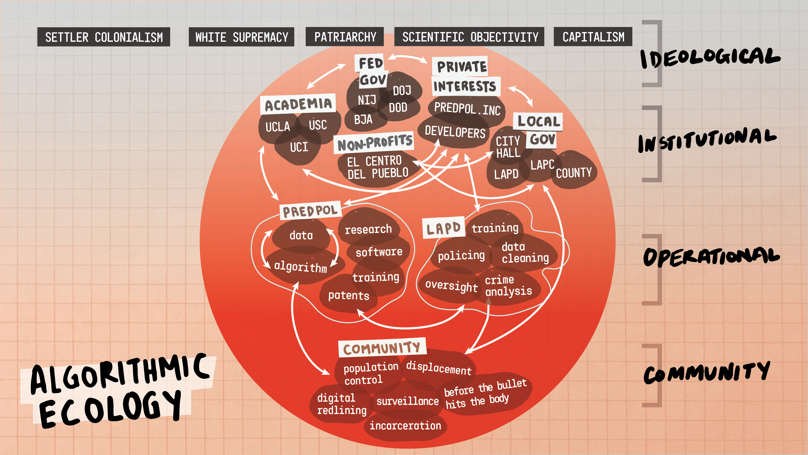

“Conquest is a process, not an event. Taking land is not simply a matter of signing a treaty or conducting a massacre. Elaborate ideologies and attendant practices are required – before, during, and after.”—Pulido, Landscapes of Racial Violence
The Stop LAPD Spying Coalition is a grassroots organization rooted in the Skid Row community on Gabrielino/Tongva land – stolen territory now known as Los Angeles. Over the past decade, our work has built grassroots power to dismantle LAPD surveillance and fight for a world without policing. This research brief offers a preview of Stop LAPD Spying’s organizing against the relationships between policing, surveillance, and real estate development. While more and more people are beginning to understand the role of data in policing, less attention is paid to data-driven policing’s relationship to settler colonialism and conquest. The document is not meant to be an exhaustive overview of this topic. Rather, our goal is to frame a broader research and organizing agenda
We know from our organizing against data-driven policing that cruelty, banishment, and dispossession are not just policing’s side effects: they are the purpose. These programs incorporate tactics honed during European violence and genocide against indigenous populations in early America as well as enslavement of African people. The U.S. military then continued to test and unleash these tactics on occupied populations in the Philippines, Viet Nam, Central America, Iraq, Afghanistan, and elsewhere. LAPD fuses those military and imperial counterinsurgency methods with the anti-Black subordination of “broken windows” policing, stop-and-frisk, the “zero tolerance” Safer Cities Initiative in Skid Row, the Suspicious Activity Reporting spy program, Metro Units “proactively” hunting people across South Central Los Angeles, and gang injunctions and databases. “Predictive” and “data-driven” policing are just the latest form of those harms. The purposes remain the same: speculatively criminalizing our identities, banishing us from our communities, and gathering “intelligence” to control us
Our research on the relationship between data-driven policing and land grew out of our years of organizing against LAPD’s first-generation of predictive policing tactics. In 2018, we published Before the Bullet Hits the Body: Dismantling Predictive Policing in Los Angeles [1]. This report is where we shared about LAPD targeting members of our communities as “tumors” to be “surgically” removed. As we were finishing that report, we began receiving through Public Records Act requests maps and other official documentation of LAPD’s predictive policing “hotspot” zones. We knew we needed to study more about the operation of these hotspots as well as the ideologies that shaped them. We asked: what is the relationship between policing and capitalism? The answer to that question begins with the process that has always bound those two forces: colonization.
Our study of the ideologies and institutions that surround predictive policing led to The Algorithmic Ecology, created in partnership with the activist group Free Radicals.  The project began because we were researching whether “hotspots” had any connection to LAPD’s murder of our Skid Row neighbor Charley "Africa" Kuenang. As we dove deeper, we uncovered an ecology of institutions and actors who helped create or utilize the algorithms to advance police violence, including real estate developers, advocacy nonprofits, academic researchers, various local, state, and federal agencies, and even the U.S. military. Each of those institutions shows up in the pages that follow.
Our primary goal here is storytelling, voicing our people’s reality. This research was a journey of collective study and storytelling, not trying to prove a hypothesis. At the same time data-mining supercharges the ability of police to stalk, target, and harm people, it also obfuscates the role of different institutions and actors in police violence. Data also helps obfuscate the purpose. Sometimes the purpose is banishment: removing us from our homes and communities in order to take the land. Sometimes it’s containment: restricting us from the areas that police want to secure for development. Sometimes it's extraction: exploiting our wealth, labor, or resources. And sometimes it’s elimination: killing or incarcerating our people. Whatever the purpose, what links these practices is the process of conquest.
LAPD’s different tactics and technologies today extend those various purposes. Predictive policing programs serve as tools of ethnic cleansing, as well as containing and controlling communities like Skid Row. LAPD’s role as an enforcement arm of landlords is analogous to the relationship of the U.S. military to land speculators and entrepreneurs in the era of genocidal western expansion. And “community policing” programs apply counterinsurgency tactics that have been used to suppress resistance and cultivate false legitimacy in imperial occupations. Throughout those examples, Los Angeles can be seen as a garrison state, with police testing new forms of surveillance and harm on our people. These examples should have resonance beyond Los Angeles, since LAPD has long been at the avant garde of white supremacy, pioneering new forms of oppression for its peers to adopt.
The rest of this report is divided into five parts. First, Not a Moment in Time chronicles the centuries-long history that stand behind policing and surveillance of land in Los Angeles. Second, Real Estate and Capitalist Crisis uses storytelling and evidence to uncover the relationships between policing, capitalist crisis, and real estate development. Third, LAPD’s First Generation of Predictive Policing (2009-2020 analyzes the specific programs, tactics, and tools LAPD used to police the land and target individuals.
Fourth,
Fifth, Predictive Policing 2.0 analyzes how LAPD is using notions of community policing and police accountability to “reform” data-driven policing. Finally, the conclusion Abolition and Rebellion exposes the limits of reformist responses to data-driven policing.